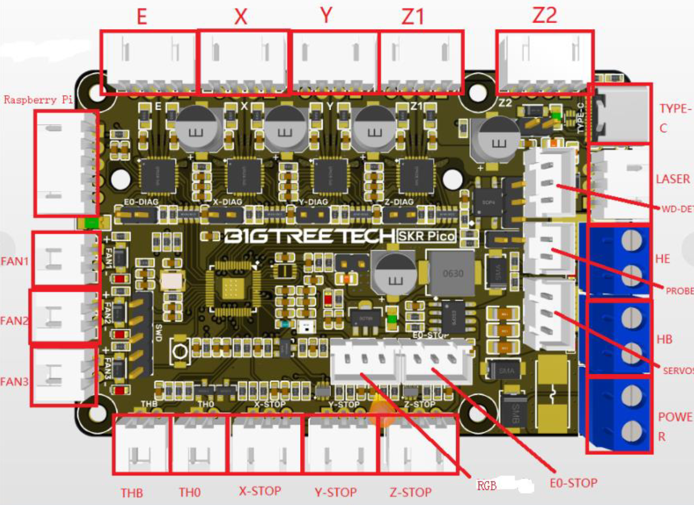

Welcome to the 3MS Documentation
The 3MS is short for MMMS, which stands for Modular Multi Material System

Inspiration
- Prusa MMU1
- Bambu AMS
Sample Prints
Sample Prints

Model: Sheep by Cipis


Model: Voron Cube (bundled with OrcaSlicer), painted by me in OrcaSlicer


Photos
Photos


Why 3MS?
Why use the 3MS when there are many other multi-material systems?
Here are a few reasons:
- Simplified Design: Minimal mechanical complexity for increased reliability.
- Comprehensive Documentation: Step-by-step guides to ensure smooth setup and operation.
- Slicer-Agnostic: No need for custom toolchange G-Code in your slicer.
- Scalable: Easily expand the system to handle up to four filaments, with future potential for more.
- Auto-Retries: Automatic retries on failed tool changes to reduce downtime.
- No Filament Cutter Needed: Achieve clean tool changes without the need for tip shaping or filament cutters.
With that said, there are a few reasons why you might not want to/be able to use the 3MS:
- Klipper firmware is a requirement, so Marlin and RRF setups are a no go
- A filament sensor is required, so if you don't have one/don't plan to get one, the 3MS won't work with your setup
Requirements
To use the 3MS, your setup has to meet the following requirements:
- Run Klipper firmware
- Have SSH (PuTTY) access (99.9% of Klipper installations have this, and if you don't you really should setup SSH)
- Have one spare USB port
- Have an adapter to install a PTFE tube to the inlet of your printer's extruder.
How it works
Here is a example step by step of what goes on during a single 3MS toolchange from T0 to T1:
- The slicer performs tip shaping and filament unloading.
- 3MS unloads T0 by 200mm at 4500mm/min (75mm/s).
- T0 is desynced from the extruder.
- Filament unloading is verified.
- T1 is synced with the extruder.
- 3MS loads T1 by 210mm at 4500mm/min.
- Filament loading is verified.
- The printer loads the filament to the nozzle.
For more detail about the Tx command, see Flowchart.
Think of the 3MS as an extension to your current extruder's length. It allows for switching filaments, but while printing allows for all the benefits of your printer's extruder.
The 3MS's motors work together with your printer's extruder. This way, there won't be any additional resistance from pulling the filament through a disabled extruder. Also, unloads and loads to/from the printer's extruder are fully synchronized with the 3MS. This allows for even faster toolchanges!
Get Started
To get started with the 3MS, see the Master Instructions.
What about the 3DChameleon?
I recently created a klipper plugin for the 3DChameleon after purchasing a unit. I'm sure my Chameleon could have worked if I had tuned it further, but after several months with only partial success, I gave up. I am still open to pull requests for 3dchameleon-klipper and will do my best to respond to issues there, but I won't be able to test it myself anymore.
Comparison of Multimaterial Systems
Not sure if you want to use the 3MS? Check this comparison between four common multimaterial systems.
-
3DChameleon MK4 Automatic Color Changer
Pros:
Compatibility
No custom firmware
Price ($200)
Cons:
Reliability
Documentation
-
Prusa MMU3 Multi Material Upgrade
Pros:
Reliability
Support
Documentation
Cons:
Compatibility
Price ($300)
-
ERCF v2 An expandable MMU for Klipper-based 3D-printers
Pros:
Reliability
Modular Design
Active Community
Documentation
Cons:
Compatibility (only Klipper)
Complexity
-
3MS Modular Multimaterial System for Klipper 3D Printers

Pros:
Simple Design
Reliability
Documentation
Modular Design
Price ($100)
Cons:
Compatibility (only Klipper)
Other:
Maximum of 4 filaments
{kind=link}
{kind=link}
{kind=link}
Master Instructions
Due to the modularity of the 3MS, there are many ways to set it up. This guide attempts to encompass all supported ways of setting up the 3MS.
Basic Steps
The basic steps this guide will follow are:
- Getting a BOM
- Assembling your 3MS
- Configuring your 3MS
- Stepper motor setup
- Slicer setup
- First print
- Troubleshooting
- Updating
0. Explanations
Before starting the instructions, a basic understanding of how the 3MS works is recommended. There are two types of components in the 3MS:
-
Controller
This controls the 3MS stepper motors. This is usually an extra 3D printer mainboard purchased specifically for the 3MS. If your existing 3D printer mainboard has spare stepper ports, you can use them for the 3MS.
The available configurations are specific to either an external mainboard setup, or utilizing spare stepper ports on your existing mainboard. If you are utilizing spare stepper ports, the name of the config will include "(main MCU)"
-
Filament Units
These moves the filament. These are standard MK8 extruders (used on Ender 3's). You can use different extruders for the filament units, as long as you can mount them securely and they can attach to a PTFE tube. MK8 extruders are used as the default due to their low cost.
The number of filaments you will be able to print with is equal to the number of filament units you have. For example, two filament units will let you print with two colors. It is important to note that one filament unit will NOT let you print in multimaterial.
0.5. Choosing a Controller
Choose one of the controllers from Controllers before continuing.
1. Getting a BOM
Go to BOM to view the bill of materials for the number of filament units you want. Example BOM for two filament units and a SKR Mini E3 V2:
| Name | Price | Quantity | Link | Notes |
|---|---|---|---|---|
| SKR Mini E3 V2 | $34.99 | 1 | Amazon | |
| Duponts | $9.99 | 1 | Amazon | These wires are only sufficient to run steppers, not heaters |
| 12V PSU | $7.39 | 1 | Amazon | This PSU is only sufficient to run steppers, not heaters |
| NEMA17 Stepper Motor | $9.99 | 2 | Amazon | You can use a pancake stepper if you want, but it will have less torque |
| MK8 Metal Extruder | $9.99 | 2 | Amazon | |
| Capricorn PTFE Tubing | $11.49 | 1 | Amazon | You likely won't need this for every unit, as this is usually too long for only one unit |
2. Assembling your 3MS
Follow Assembly to assemble your 3MS.
3. Configuring your 3MS
- Install Klipper firmware onto the MCU by following Firmware.
- Install DynamicMacros, following instructions from here.
- Follow Installation to install the 3MS configuration.
- Follow Filament Sensor to setup your filament sensor with the 3MS.
4. Stepper motor setup
Follow Stepper Setup to setup and calibrate each of your filament units.
5. Slicer setup
Follow Slicer Setup to setup your slicer for the 3MS.
6. First print
Follow First Print to create your first multimaterial print with the 3MS.
7. Troubleshooting
Check Troubleshooting to find guides to troubleshoot your 3MS.
8. Updating
To update the 3MS configuration, go to the Update Manager in Mainsail/Fluidd and refresh the updates.

Next, find the "mmms" entry in the list. If there is an "Update" button next to it, click it and begin updating.
After updating, in your terminal, run:
This will install the new 3MS configuration. Next, restart Klipper:
Info
It is important to restart the Klipper service, and not just run the RESTART command.
Run this command in your terminal:
Setup ↵
BOM
Number of filament units
First, choose the number of filament units you want. Each filament unit lets you print with an additional filament. Two filament units are the minimum. You can add or remove filament units after building, but the BOM and configuration will vary based on how many filament units you want.
Controller BOMs
Choose the BOM for your chosen controller from the list below:
- BTT SKR Mini E3 V2
- BTT SKR Pico
- BTT Octopus (main MCU)
- Zonestar ZM384 (main MCU)
- Mini RAMBo
- Geeteech A30T
Filament Unit BOMs
For each filament unit, purchase this BOM:
| Name | Quantity | Price | Link | Notes |
|---|---|---|---|---|
| NEMA17 Stepper Motor | 1 | $9.99 | Amazon | You can use a pancake stepper if you want, but it will have less torque |
| MK8 Metal Extruder | 1 | $9.99 | Amazon | Alternatively, you can use this Dual-drive MK8 based extruder |
| Capricorn PTFE Tubing | 1 | $11.49 | Amazon | You likely won't need this for every unit, as this is usually too long for only one unit |
Controllers ↵
Controllers
Follow this guide to determine which controller to use in your 3MS.
Options
The 3MS works on multiple different controllers.
Info
If your printer's mainboard has spare stepper ports, you can use them to control 3MS steppers. You can open an issue on Github (there's a template) to get a configuration made for your specific setup. Any controllers listed with "(main MCU)" use those spare stepper plugs.
Choose one of the following supported controllers (a checkmark indicates it is fully tested):
-
Fully Tested
-
Einsy RAMBo (main MCU) with SKR Mini E3 V2.0 (3ms MCU)
Expert modification
-
[SKR Pico (4 colors)][skrpico.md]
Untested
-
Zonestar ZM384 (main MCU) (4 colors)
Untested
-
Untested
-
BTT Octopus (main MCU) (4 colors)
Untested
-
In development
BTT SKR Mini E3 V2
Max filament units: 4
MCU Name: 3ms
BOM
| Name | Price | Quantity | Link | Notes |
|---|---|---|---|---|
| SKR Mini E3 V2 | $34.99 | 1 | Amazon | |
| Duponts | $9.99 | 1 | Amazon | These wires are only sufficient to run steppers, not heaters |
| 12V PSU | $7.39 | 1 | Amazon | This PSU is only sufficient to run steppers, not heaters |
Wiring
Route the wires from the NEMA17's to the controller board. Follow this table to determine which port to plug the motors into:
| Filament Unit # | Motor Port |
|---|---|
| 0 | XM |
| 1 | YM |
| 2 | ZAM or ZBM |
| 3 | E0M |
Now, grab your 12V PSU and two M-M duponts, one red and one black (M-M means that there is metal coming out of both ends of the cable). Plug the PSU into the wall, but don't plug the screw terminals into the PSU (the screw terminals have green)
- Plug the red wire into the positive terminal of the screw terminals
-
Plug the black wire into the negative terminal of the screw terminals
Danger
These dupont cables are too thin to run much more than the stepper motors. If you run a heater or other power-intensive device off of the SKR board, the duponts and/or PSU can melt/catch fire. To reduce the risk of this, you can double up on the duponts or get thicker wires.
-
Following this image, choose either the DCIN or POWER input

- Route the two wires inside closest to your chosen input
- Using the markings on the board, plug the red wire into the positive terminal on the SKR
- Using the markings on the board, plug the black wire into the negative terminal on the SKR
-
Verify all connections
Warning
If the wires are plugged into the wrong place, or swapped polarities, your SKR, Stepper motors, and/or PSU can be badly damaged.
-
Plug the PSU screw terminals into the PSU wire
If the SKR lights up, you wired it correctly!
Finally, plug the SKR into your Klipper host with the blue cable that came with it.
BTT SKR Pico
Max filament units: 4
MCU Name: 3ms
BOM
| Name | Price | Quantity | Link | Notes |
|---|---|---|---|---|
| SKR Pico | $35.99 | 1 | Amazon | |
| Duponts | $9.99 | 1 | Amazon | These wires are only sufficient to run steppers, not heaters |
| 12V PSU | $7.39 | 1 | Amazon | This PSU is only sufficient to run steppers, not heaters |
Wiring
Route the wires from the NEMA17's to the controller board. Follow this table to determine which port to plug the motors into:
| Filament Unit # | Motor Port |
|---|---|
| 0 | X |
| 1 | Y |
| 2 | Z1 or Z2 |
| 3 | E |
Now, grab your 12V PSU and two M-M duponts, one red and one black (M-M means that there is metal coming out of both ends of the cable). Plug the PSU into the wall, but don't plug the screw terminals into the PSU (the screw terminals have green)
- Plug the red wire into the positive terminal of the screw terminals
-
Plug the black wire into the negative terminal of the screw terminals
Danger
These dupont cables are too thin to run much more than the stepper motors. If you run a heater or other power-intensive device off of the SKR board, the duponts and/or PSU can melt/catch fire. To reduce the risk of this, you can double up on the duponts or get thicker wires.
-
Following this image, locate the POWER input 
- Route the two wires inside closest to the POWER input
- Using the markings on the board, plug the red wire into the positive terminal on the SKR
- Using the markings on the board, plug the black wire into the negative terminal on the SKR
-
Verify all connections
Warning
If the wires are plugged into the wrong place, or swapped polarities, your SKR, Stepper motors, and/or PSU can be badly damaged.
-
Plug the PSU screw terminals into the PSU wire
{kind=link}
If the SKR lights up, you wired it correctly!
Finally, plug the SKR into your Klipper host with the blue cable that came with it.
BTT Octopus (main MCU)
Warning
This configuration may not work with the BTT Octopus Pro.
Max filament units: 4
MCU Name: main
main MCU
This configuration is a main MCU configuration, meaning that your printer should already be running off a BTT Octopus and you don't need to purchase one.
BOM
Per filament unit:
1x TMC2209 ($7 each)
Wiring
Route the wires from the NEMA17's to the controller board. Follow this table to determine which port to plug the motors into:
| Filament Unit # | Motor Port |
|---|---|
| 0 | MOTOR7 |
| 1 | MOTOR6 |
| 2 | MOTOR5 |
| 3 | MOTOR4 |
Einsy RAMBo (main MCU) with SKR Mini E3 V2
Danger
This guide is an expert guide only
Info
This modification is designed for the Prusa MK3/S/S+, and depends on this Klipper configuration.
Why?
When printing fast, the TMC2130's on the Einsy RAMBo can get quite loud. The TMC2209's on the SKR Mini are much quieter and support denser microstepping.
BOM
| Name | Price | Quantity | Link | Notes |
|---|---|---|---|---|
| PSU -> Einsy Cable | $7.99 | 1 | PartsBuilt3D | |
| Stepperonline NEMA17 | $9.99 each | Amazon | 2 | Replaces current XY motors |
Wiring
First, unplug the 3MS steppers from the SKR Mini, and the XY steppers from the Einsy RAMBo. The motors will need to be switched due to different connector types between boards.
This table outlines the major wiring of this modification.
| Einsy RAMBo | SKR Mini E3 V2 | Motor |
|---|---|---|
| PSU+ | POWER+ | |
| PSU- | POWER- | |
| XM | 3ms0 | |
| YM | 3ms1 | |
| XM | X | |
| YM | Y |
Configuration
In your printer.cfg, comment out these lines:
| printer.cfg | |
|---|---|
Next, copy the contents of 3ms/controllers/einsy_rambo_with_skr_mini/xy-motors.cfg and ze-motors.cfg to klipper-prusa-mk3s/skr/xy.cfg, and klipper-prusa-mk3s/mk3s/ze.cfg, respectively.
Add the following new lines:
Restart Klipper.
Zonestar ZM384 (main MCU)
Max filament units: 3
MCU Name: main
main MCU
This configuration is a main MCU configuration, meaning that your printer should already be running off a ZM384 and you don't need to purchase one.
Configuration
In your 3ms/macros.cfg, edit the following section:
Wiring
Route the wires from the NEMA17's to the controller board. Follow this table to determine which port to plug the motors into:
| Filament Unit # | Motor Port |
|---|---|
| 0 | E0 |
| 1 | E1 |
| 2 | E2 |
| 3 | E3 |
Mini RAMBo
Max filament units: 4
MCU Name: 3ms
BOM
| Name | Price | Quantity | Link | Notes |
|---|---|---|---|---|
| Mini RAMBo | 1 | |||
| Duponts | $9.99 | 1 | Amazon | These wires are only sufficient to run steppers, not heaters |
| 12V PSU | $7.39 | 1 | Amazon | This PSU is only sufficient to run steppers, not heaters |
Wiring
Route the wires from the NEMA17's to the controller board. Follow this table to determine which port to plug the motors into:
| Filament Unit # | Motor Port |
|---|---|
| 0 | XM |
| 1 | YM |
| 2 | ZAM or ZBM |
| 3 | E0M |
Now, grab your 12V PSU and two M-M duponts, one red and one black (M-M means that there is metal coming out of both ends of the cable). Plug the PSU into the wall, but don't plug the screw terminals into the PSU (the screw terminals have green)
- Plug the red wire into the positive terminal of the screw terminals
-
Plug the black wire into the negative terminal of the screw terminals
Danger
These dupont cables are too thin to run much more than the stepper motors. If you run a heater or other power-intensive device off of the RAMBo board, the duponts and/or PSU can melt/catch fire. To reduce the risk of this, you can double up on the duponts or get thicker wires.
-
Route the two wires inside closest to your chosen input
- Using the markings on the board, plug the red wire into the positive terminal on the RAMBo
- Using the markings on the board, plug the black wire into the negative terminal on the RAMBo
-
Verify all connections
Warning
If the wires are plugged into the wrong place, or swapped polarities, your RAMBo, Stepper motors, and/or PSU can be badly damaged.
-
Plug the PSU screw terminals into the PSU wire
If the RAMBo lights up, you wired it correctly!
Finally, plug the RAMBo into your Klipper host with the cable that came with it.
Geetech A30T
Contributed by @ImChrono
Max filament units: 7
MCU Name: 3ms
BOM
| Name | Price | Quantity | Link | Notes |
|---|---|---|---|---|
| Geetech A30T | $34.99 | 1 | Geetech | |
| Duponts | $9.99 | 1 | Amazon | These wires are only sufficient to run steppers, not heaters |
| 24V PSU | $7.39 | 1 | Amazon | This PSU is only sufficient to run steppers, not heaters |
Firmware
To flash Klipper firmware to the A30T, run the following command and see the following screenshot:
{kind=link}
Next, connect the BOOT0 jumper on the A30T and run:
Wiring
Route the wires from the NEMA17's to the controller board. Follow this table to determine which port to plug the motors into:
| Filament Unit # | Motor Port |
|---|---|
| 0 | X |
| 1 | Y |
| 2 | Z0 |
| 3 | Z1 |
| 4 | E1 |
| 5 | E2 |
| 6 | E3 |
Now, grab your 12V PSU and two M-M duponts, one red and one black (M-M means that there is metal coming out of both ends of the cable). Plug the PSU into the wall, but don't plug the screw terminals into the PSU (the screw terminals have green)
- Plug two red wires into the positive terminal of the screw terminals
-
Plug two black wires into the negative terminal of the screw terminals
Danger
These dupont cables are too thin to run much more than the stepper motors. If you run a heater or other power-intensive device off of the motherboard, the duponts and/or PSU can melt/catch fire. To reduce the risk of this, you can double up on the duponts or get thicker wires.
-
Route the four wires inside closest to your chosen input
- Using the markings on the board, plug the two red wires into the positive terminal on the motherboard
- Using the markings on the board, plug the two black wires into the negative terminal on the motherboard
-
Verify all connections
Warning
If the wires are plugged into the wrong place, or swapped polarities, your motherboard, Stepper motors, and/or PSU can be badly damaged.
-
Plug the PSU screw terminals into the PSU wire
If the motherboard lights up, you wired it correctly!
Finally, plug the motherboard into your Klipper host with the cable that came with it.
Ended: Controllers
Assembly
Follow this guide to assemble your 3MS.
Printed Parts
An optional board enclosure for the SKR Mini E3 is available here.
Additionally, an optional universal mount for the MK8 extruder using M3 bolts is available here. Note that this requires 2-4 M3 bolts and a place to screw the bolts into.
Finally, you will need to print enough of these Y splitters for the filament.
The Y-splitter available here is now recommended.
MK8 Assembly
Next, assemble the MK8 extruders onto the NEMA17 motors using the provided instructions that came with them. If you use the mount provided above, make sure it is in between the MK8 and NEMA17.
Wiring
Note for Certain Printers
If your printer has Klipper running internally (not on an external computer), the controller (if not a main MCU config) is plugged into a USB port on the printer itself.
Follow one of the following guides based on your controller:
Firmware
Follow this guide to install Klipper firmware onto your 3MS MCU. This guide is a modified version of the Klipper Documentation.
Info
The following controller(s) can skip this guide:
- BTT Octopus (main MCU)
- Zonestar ZM384 (main MCU)
Create firmware.bin
Make sure your 3MS MCU is plugged into your Klipper Host. Run in your terminal:
In the menuconfig, configure it to your MCU. Instructions are included at the top of 3ms/controllers/xxx/steppers.cfg.
Geetech A30T
If you're using a Geetech A30T controller, follow the flashing instructions here.
Run in your terminal:
The klipper.bin file, located in ~/klipper/out/klipper.bin needs to be copied to a MicroSD card and renamed to firmware.bin (case-sensitive).
Install firmware.bin
Next, unplug the 3MS board from the PSU and your Klipper Host and insert the SD Card. Next, plug in the PSU, THEN the Klipper Host to the 3MS board. The firmware is now flashed.
Get MCU ID
In the terminal, run:
Example output:
In this case, the first line is the 3MS, and the second line is the 3D printer. Now that you know the id of the 3MS MCU, copy it and save it to a file:
Slicer Setup
Follow this guide to setup the 3MS with your slicer. OrcaSlicer will be used in this guide, but these same settings (with different names) can be applied to PrusaSlicer and SuperSlicer.
Number of Filament Units
Set the number of filaments in your slicer to the number of filament units in your 3MS.

In OrcaSlicer, press the filament plus button until there are as many filaments displayed as you have filament units.
Klipper Start/End G-Code
In your Klipper PRINT_START macro, add the following right before your purge line:
In your PRINT_END macro, add the following before the cooldown command is called:
Slicer Start G-Code
In your slicer's Start G-Code, add the following parameter to your PRINT_START:

Info
This is the last required part of slicer setup.
Optional: klipper_estimator
If you use klipper_estimator and want the toolchange represented in the time estimate, time your toolchange, then change your Change filament G-Code:

First Print
Follow this guide to begin your first multimaterial print. There are two main ways to prepare a model for multimaterial painting.
Method 1: Multimaterial Painting
This method allows you to turn any model, even if it's not designed for multimaterial printing, into a multimaterial print. First, import your model into the slicer. In this case, a 3DBenchy will be used.
Cmd+I OR Ctrl+I

Next, select the model and click multimaterial painting at the top.
N

Once you're in this menu, you can choose any tool, tool size, and filament. Now, just drag over the model to apply the selected tool to the model. In this case, the hull of the 3DBenchy will be set to filament two using the fill tool.

Finally, hit slice and your model is ready to print!
Cmd+R OR Ctrl+R

Method 2: Multimaterial Model
This method allows you to turn parts of a model to different materials. For this tutorial, this T-rex by Cipis will be used. First, import your model into the slicer. If prompted while opening to treat the model as multiple parts, select "Yes".
Cmd+I OR Ctrl+I

Next, go to object settings and change the different parts of the model to different colors.

Finally, hit slice and your model is ready to print!
Cmd+R OR Ctrl+R

Wipe Tower Position
In the examples, you may have noticed that the wipe tower is far from the model. The travel time between the model and wipe tower adds up, and moving the tower closer can help reduce print time.
In the "Prepare" view, click and drag the wipe tower as close to the object as you can without colliding.

If you have a camera on your 3D printer, you may want to put the wipe tower "behind" the part from your camera's perspective.
KlipperScreen
Info
This feature is still in an alpha state.


The 3MS has a custom fork of KlipperScreen you can use to control your 3MS.
Install
To install the 3MS KlipperScreen, first install KlipperScreen following instructions here. Then, run in your terminal:
In your KlipperScreen.conf, add the following:
replacing <num-tools> with the number of filament units your 3MS has.
Restart KlipperScreen.
Ended: Setup
Configuration ↵
Configuration
This guide covers the configuration structure and options of the 3MS.
main.cfg
main.cfg is located in 3ms/main.cfg. It contains the following:
[save_variables]configuration section. This section sets the location where variables about the previous tool will be saved.[include]sections. These reference other configuration files covered in this guide. The included configurations are:settings.cfgmacros.cfgcontrollers/xxx/steppers.cfg
settings.cfg
settings.cfg contains the settings the 3MS uses during toolchanges in macros.cfg. Further information is here.
macros.cfg
macros.cfg contains the macros the 3MS uses during toolchanges. Further information is here.
controllers/xxx/steppers.cfg
steppers.cfg contains the MCU configuration for the 3MS. It contains the following:
[extruder_stepper 3msx]This contains the pin mappings for the motor assigned to 3MS tool x.[tmc2209 extruder_stepper 3msx]This contains the pin mappings for the TMC2209 controlling the motor assigned to 3MS tool x.[mcu 3ms]This contains the serial path to the 3MS MCU.- Other sections: These are configuration sections specific to the MCU and should not be modified.
KlipperScreen.conf
This contains the KlipperScreen 3MS menu configuration. For more information, see KlipperScreen.
Installation
Follow this guide to install the 3MS configuration and macros.
Clone Repository
First, clone the 3MS repository:
Install Script
K1 Series
If you are setting up the 3MS on a Creality K1 Series printer (K1, K1C, K1 Max), use the following install script instead:
Run the install script:
printer.cfg
In your printer.cfg, add:
| printer.cfg | |
|---|---|
DynamicMacros
The 3MS configuration depends on DynamicMacros. If you haven't installed it already, follow the instructions here to do so.
Remove the following line from your 3ms/main.cfg if it exists:
| 3ms/main.cfg | |
|---|---|
Add 3ms/macros.cfg to your [dynamicmacros] config section. Example:
Moonraker Update Manager
To enable updates for the 3MS, add the following to your moonraker.conf:
| moonraker.conf | |
|---|---|
Warning
When updating via Moonraker, the following files will be overwritten:
macros.cfgKlipperScreen.conf
If you have any changes in these files, they will be lost when updating.
Controller
In 3ms/main.cfg, edit the [include ./controllers/xxx/steppers.cfg] line, replacing xxx with the config name of your controller:
| Controller Name | Config Name |
|---|---|
| SKR Mini E3 V2 | btt_skr_mini_e3_v2 |
| SKR Pico | btt_skr_pico |
| BTT Octopus (main MCU) | btt_octopus_main |
| Zonestar ZM384 (main MCU) | zonestar_zm384_main |
| Mini RAMBo | mini_rambo |
| Geetech A30T | gtm32_103_v1 |
Configure MCU ID
Finally, to configure the MCU ID you saved from Firmware, run in your terminal:
Copy the path that is output. Now, in your 3ms/controllers/xxx/steppers.cfg, in the [mcu 3ms] section (towards the bottom), set the MCU ID.
Example:
Stepper Motors
Follow this guide to calibrate each of the stepper motors. Each of these steps should be repeated for each of your filament units, replacing TOOL=0 with TOOL=1, and so on. Also replacing 3ms0 with 3ms1, and so on.
Info
If your stepper motor shakes erratically while running any of these commands, your wiring may be incorrect.
Is the motor spinning?
Run this command:
If the motor spins, skip to the next step. If not, check your wiring first. If your wiring is fine, go to 3ms/steppers.cfg. Locate the section named [extruder_stepper 3ms0]. In front of the enable_pin, add, an !. If there already is one, remove it. Example:
Is the motor spinning backwards?
Preload each of the filament units with a piece of scrap filament by pushing the lever to release the tension, inserting filament, then releasing the lever to restore tension. Next, run this command:
Note which way the filament moves. If it moves forwards, away from the PTFE coupler, skip to the last step. If it moves backwards, you have two choices:
- Switch the motor's wires
- Invert the pin in the configuration
To invert the pin in the configuration, locate the configuration section for the filament unit spinning backwards, and invert the dir_pin. See the previous section for how to invert the pin.
How far does the filament move?
This section is a modified version of the Klipper Docs
Preload each of the filament units with a piece of scrap filament at least 200mm long by pushing the lever to release the tension, inserting filament, then releasing the lever to restore tension.
Use a ruler and a marker to place a mark 70mm from the inlet of the filament unit. Use calipers to measure the actual distance. Write it down, as it will be referred to as <initial_mark_distance>.
Next, run this command:
Use calipers to measure the new distance between the inlet of the filament unit and the mark. Write it down, as it will be referred to as <next_mark_distance>.
Calculate <actual_extrude_distance> = <initial_mark_distance> - <next_mark_distance>
In the steppers.cfg file (located in 3ms/controllers/xxx/steppers.cfg), locate the configuration section for the current extruder. Example:
| 3ms/controllers/btt_skr_mini_e3_v2/steppers.cfg | |
|---|---|
Note the rotation_distance (last line). In this case, it is 32.8450.
Calculate the new rotation distance: new_rotation_distance = <rotation_distance> * <actual_extrude_distance> / 50.
Round this result to three or four decimal places. Decrease it by 0.005 (this is so that if this result is slightly off, the 3MS filament unit will skip, instead of the printer's extruder stripping the filament during a print).
Set the new rotation_distance in your config. Save it and restart Klipper.
Info
If you use the same stepper motor brand and model for each of your filament units, you likely only have to do this step for one stepper, then copy over the rotation_distance to all the others.
Filament Sensor
Follow this guide to configure your filament sensor with the 3MS.
Location of Sensor
The filament sensor should be right before the extruder, and after the Y splitter. Other locations, such as between the hotend and extruder, have not been tested.
Warning
The 3MS has only been tested with a filament_switch_sensor, and not with a filament_motion_sensor
Configuration
To configure your filament sensor with the 3MS, open 3ms/settings.cfg and change the following (assuming your filament sensor is named "runout_sensor"):
Macros
3MS Settings
MMMS_SETTINGS
Stores the settings for the 3MS.
Default Settings
Example Usage
SET_3MS_SETTINGS
Sets the configuration for the 3MS. Allows temporary customization of load and unload distances and speeds
Example Usage
GET_3MS_SETTINGS
Displays the configuration for the 3MS.
Example Usage
Filament Handling
MMMS_UNLOAD
Unloads filament by a specified distance and speed. If no distance/speed is specified, it uses the default unload distance/speed from MMMS_SETTINGS.
Example Usage
MMMS_LOAD
Loads filament by a specified distance and speed. If no distance/speed is specified, it uses the default load distance/speed from MMMS_SETTINGS.
Example Usage
CHECK_FSENSOR
Checks the filament sensor state. Pauses the print if the sensor state does not match the expected value.
Example Usage
Tool Sync
SET_TOOL_SYNC
Sets the sync state of a tool. Syncs or desyncs the specified tool to/from the extruder.
Example Usage
SYNC_TOOL
Syncs the specified tool and desyncs all other tools to/from the extruder.
Example Usage
DESYNC_TOOL
Desyncs the specified tool from the extruder.
Example Usage
CLEAR_TOOL
Clears the current tool selection by setting it to -1.
Example Usage
DESYNC_ALL_TOOLS
Desyncs all configured tools.
Example Usage
Print Start and End
MMMS_START
Starts the print by checking the filament sensor. If filament is detected, the print is paused and the user is notified. Regardless of the filament sensor state, the initial tool is loaded.
Example Usage
MMMS_END
Ends the print by unloading the current tool. If filament is detected after unloading, the user is notified.
Example Usage
Tool Change
T0
Changes to tool 0.
Example Usage
T1
Changes to tool 1.
Example Usage
Tx
Changes to a specified tool. Replace x with the tool number.
Example Usage
Ended: Configuration
Guides ↵
Materials
Follow this guide to determine if your filament will work with the 3MS.
Materials Table
This table contains which filaments work in single mode and/or multimaterial mode with the 3MS.
| Filament | Single Mode | Multimaterial Mode | Notes |
|---|---|---|---|
| PLA | Yes | Yes | |
| PLA+ | Yes | Yes | |
| Silk PLA | Yes | No | |
| Matte PLA | Yes | No | |
| PETG | Yes | Yes | |
| TPU | Untested | No |
PLA(+)
PLA/PLA+/PLA Pro, etc. filaments are very easy to print in multimaterial with the 3MS. They also support the No Tip Shaping feature.
Silk/Matte PLA
Silk/Matte PLA filaments are slightly more difficult to print with or without the 3MS. They generally require tip shaping to work with the 3MS in multimaterial mode.
PETG
PETG filaments are easy to print in multimaterial with the 3MS. They will likely require tip shaping. Suggested settings options are provided below. Ideal settings for your setup will likely include a combination of the options.
Tip Shaping
| Setting Name | Setting Value |
|---|---|
| Nozzle Temperature | 250ºC |
| Loading speed at the start | 19mm/s |
| Loading speed | 14mm/s |
| Unloading speed at start | 200mm/s |
| Unloading speed | 90mm/s |
| Delay after unloading | 4s |
| # Cooling moves | 3 |
| Speed of first cooling move | 1mm/s |
| Speed of last cooling move | 20mm/s |
| Ramming settings |  |
| Source: Prusa Forums |
| Setting Name | Setting Value |
|---|---|
| Nozzle Temperature | 250ºC |
| Loading speed at the start | 15mm/s |
| Loading speed | 14mm/s |
| Unloading speed at start | 120mm/s |
| Unloading speed | 20mm/s |
| Delay after unloading | 0s |
| # Cooling moves | 1 |
| Speed of first cooling move | 1mm/s |
| Speed of last cooling move | 15mm/s |
| Ramming settings |  |
| Source: Prusa Forums |
TPU
TPU filaments are very difficult to print with or without the 3MS. If your printer can reliably print TPU, you can likely use it with the 3MS in single mode. To use it in multimaterial mode and/or improve reliability, see the experimental Dual Drive 3MS Extruders for TPU feature.
Tip Shaping Guidelines
Follow this guide to get faster and more reliable toolchanges with your 3MS.
Does My Filament Need Tip Shaping?
If your filament is in this list, then it likely won't need tip shaping, and you can use the No Tip Shaping feature:
- PLA (not Silk, Matte, or glitter variants)
- PLA+ (including PLA Pro, Tough PLA)
- PETG
If you filament wasn't in that list, continue reading this page.
Blobby Tips
If your filament tip has a thicker tip after unloading, you can do two things:
- Print hotter
- Decrease cooling moves
Stringy Tips
If your filament tip has a stringy tip after unloading, you can do two things:
- Print colder
- Increase cooling moves
You may also be able to use the No Tip Shaping feature.
Hook of Death
If you filament tip can't unload out of your extruder and forms a hook shape, you may need to replace the PTFE tube between your printer's extruder and hotend. You may also want to follow the recommendations for Blobby tips.
Toolchanges Without Tip Shaping or Filament Cutter!
Because the 3MS is synchronized to the printer's extruder, it can perform toolchanges without any tip shaping or filament cutter.
Should Tip Shaping be Used?
See Materials for information on whether or not tip shaping should be used for your filaments.
Slicer Setup
Setup your slicer for no tip shaping as follows.
Disable Filament Ramming
Disable filament ramming in Filament Settings -> Multimaterial -> Toolchange parameters with single extruder MM printers:
{kind=link}
{kind=link}
Unload/Load Speed
Next, change the Unloading speed at start and Unloading speed to 300 (faster is better here). Next, change the Loading speed at start and Loading speed to 300 and 100, respectively.
What this does
The main idea behind toolchanges without tip shaping relies on the filament being unloaded too fast to form a blob. Setting the Unloading speed settings allows this. Next, loading the filament back can be generally optimized by increasing the Loading speed settings.
{kind=link}
Temperature
If your filament has very long strings on the end of them after unloading without tip shaping (longer than 2cm), decrease your filament temperature.
If your filament tip has a nearly flat tip, increase your filament temperature.
The ideal filament tip has a pointy end and a small string (less than 5mm). When in doubt, it is recommended to aim for a slightly stringy tip over a flat tip.
Ended: Guides
Contributing ↵
Contributing
If you want to contribute to the 3MS project, follow the instructions below.
Development Setup
Follow Development Setup to setup your system for development with the 3MS.
Controllers
If your contribution adds support for another controller type, see Controller Support.
Pull Request
Finally, submit a pull request. A developer will get back to you soon with feedback, before merging your pull request into the main project.
Thank you for your contribution to the 3MS project!
Development Setup
Follow this guide to setup your system for development with the 3MS.
Configuration Changes
- Fork the 3MS repository
- Create a new branch for your pull request (from the
mainbranch) - Develop changes in the new branch
Documentation Changes
Controller Support
Follow this guide to add support for a new 3MS controller.
Requirements
To add support for a new 3MS controller, the following requirements must be met:
- Klipper natively supports the controller
- There is an official Klipper configuration for the controller
Request a new Controller
If you don't want to create the new controller configuration yourself, you can submit a Controller Request.
Supporting a new Controller
If the controller meets the aforementioned requirements, you can proceed with adding support for it.
The following example will be for a SKR Mini E3 V2.0 controller.
Removing Extra Config Sections
First, remove any section of the original configuration that isn't a stepper motor configuration, or a TMCxxxx section. If the controller is a main MCU, remove the [mcu] section too. In both cases, the [extruder] section is kept. Keep any [static_digital_output] or [board_pins] sections. If there are any [board_pins] sections, add the mcu: 3ms line to its configuration.
1 2 3 4 5 6 7 8 9 10 11 12 13 14 15 16 17 18 19 20 21 22 23 24 25 26 27 28 29 30 31 32 33 34 35 36 37 38 39 40 41 42 43 44 45 46 47 48 49 50 51 52 53 54 55 56 57 58 59 60 61 62 63 64 65 66 67 68 69 70 71 72 73 74 75 76 77 78 79 80 81 82 83 84 85 86 87 88 89 90 91 92 93 94 95 96 97 98 99 100 101 102 103 104 105 106 107 108 109 110 111 112 113 114 115 116 117 118 119 120 121 122 123 124 125 126 127 128 | |
1 2 3 4 5 6 7 8 9 10 11 12 13 14 15 16 17 18 19 20 21 22 23 24 25 26 27 28 29 30 31 32 33 34 35 36 37 38 39 40 41 42 43 44 45 46 47 48 49 50 51 52 53 54 55 56 57 58 59 60 61 62 63 64 65 66 67 68 69 70 71 72 73 74 75 76 77 78 79 80 81 82 83 84 85 86 87 88 89 90 91 92 93 94 95 96 97 98 99 100 101 102 103 | |
Stepper Configuration
Next, change any stepper_ or extruder sections to extruder_stepper_ sections. Rename the steppers from x, y, z, and extruder to 3ms0, 3ms1, 3ms2, 3ms3, etc. Remove the heater configuration from the [extruder] section. Also, update any [tmcxxxx] to reflect the new stepper names.
1 2 3 4 5 6 7 8 9 10 11 12 13 14 15 16 17 18 19 20 21 22 23 24 25 26 27 28 29 30 31 32 33 34 35 36 37 38 39 40 41 42 43 44 45 46 47 48 49 50 51 52 53 54 55 56 57 58 59 60 61 62 63 64 65 66 67 68 69 70 71 72 73 74 75 76 77 78 79 80 81 82 83 84 85 86 87 88 89 90 91 92 93 94 95 96 97 98 99 100 101 102 103 | |
Final Important Details
Change the [mcu] section (if present) to [mcu 3ms]. Add a 3ms: prefix to all pin names (if not a main MCU config). Any ! or ^ should go before the 3ms: prefix. Remove the filament_diameter and nozzle_diameter options from the former [extruder] section. Remove all homing/endstop-related sections from the stepper configurations. Append a extruder: extruder option to all [extruder_stepper] sections.
Ended: Contributing
Troubleshooting ↵
Troubleshooting
If you are having trouble getting your 3MS to work properly, check if the problem you're facing is in this list:
If it is not in this list, please open an issue on Github.
Motor Skipping
If any of your extruder motors are skipping while using the 3MS, follow this troubleshooting guide to diagnose the issue and fix it.
Printer's Extruder
First, check if your printer's extruder is properly extruding. To check this, detach the PTFE tube from the inlet of your extruder, and manually load filament, using Klipper's controls for loading filament. If your printer's extruder is having trouble extruding plastic, you may have one of the following:
You can also slightly decrease the 3MS's rotation_distance.
3MS Extruder
If the printer's extruder is working properly, and you're still having skipping, check the filament tips. If the tip has a long string on it, or has a thick blob at the end, your filament tips may be to blame. If you have stringy tips, decrease your nozzle temperature while printing. If you have blobby tips, increase your nozzle temperature while printing. Alternatively, you can purchase PTFE tubes with a larger ID to allow for less precise tips.
You can also slightly increase the 3MS's rotation_distance.
Filament Sensor False Alarm
If during toolchanges, a failed toolchange false alarm occurs (print pauses even though toolchange was successful), follow this troubleshooting guide to fix it.
fsensor_delay
The main culprit for this issue is likely your fsensor_delay in 3ms/settings.cfg is too short. Short values will cause more false alarms, and long values will cause less. Generally, the default 2000ms is good for most setups, but if you are having false alarms, you will have to increase it. Example:
Underextrusion
If your prints start to have gaps in the walls, you are likely experiencing underextrusion. Follow this troubleshooting guide to diagnose the issue and fix it.
Extruder/Hotend Issues
First, try the solutions in this article in case there are any issues with your printer's extruder/hotend.
3MS rotation_distance
If your extruder and hotend are working fine, the next likely cause of underextrusion is your 3MS rotation_distance is too high. There are two likely causes and solutions, based on where in the print the underextrusion occurs:
-
Whole print - 3MS motors working backwards from the extruder or not working at all
Follow the wiring section of Assembly.
Follow the first two steps of Stepper Setup.
-
Partially through print - 3MS motors not turning enough
Follow the last step of Stepper Setup.
Failed Load/Unload
If your printer is paused and displaying Please load or Please unload, follow this troubleshooting guide to diagnose the problem and fix it.
False Alarm
First, see False Alarm to ensure your filament sensor is properly configured and is being properly read by the 3MS macros.
Failed Unload
When your printer displays a Please unload message, pay attention to the Tx number it shows. For example, if it displays the message Please unload T0, it failed to unload the filament at T0. Follow these steps to recover the toolchange:
- Detach the PTFE tube from the inlet of your printer's extruder (you may need to push down the lever on the 3MS extruder for that tool while doing this).
-
Manually pull the filament out of the printer's extruder.
If it is stuck, try one of the following:
- Reload the filament until it is extruding out of the nozzle, then unload the filament quickly while pulling firmly.
- Open your printer's extruder assembly, pull the filament through, and cut off the tip.
Also, see Skipping
-
Next, manually pull the filament all the way to where the filament is usually parked between toolchanges (before the Y-splitter).
- Manually load the next filament. Check the console for a message like
T0 -> T1indicating which filament is next (in this case T1). It should be loaded to the entry of the printer's extruder gears. - Resume your print.
Next, diagnose the problem based on these possible scenarios:
-
Filament never unloaded out of printer's extruder
This is a sign of poor tip shaping. The quick fix for this is to increase print temperatures. Also, see Skipping.
-
Filament unloaded out of printer's extruder, but stopped before filament sensor
This is a sign of your filament sensor causing excess friction on the filament, or your 3MS extruder tension too loose. For the 3MS tension too lose, simply rotate the tensioning screw on the 3MS extruder clockwise a couple rotations.
Failed Load
When your printer displays a Please load message, pay attention to the Tx number it shows. For example, if it displays the message Please load T1, it failed to load the filament at T1. Follow these steps to recover the toolchange:
-
Manually push the filament all the way to the inlet of your printer's extruder.
If your filament isn't able to load, the previous tool may not have completely unloaded. See Failed Unload for more information.
-
Resume your print.
Next, diagnose the problem based on these possible scenarios:
-
Previous filament didn't unload enough
Increase your
unload_distanceinMMMS_SETTINGS(3ms/settings.py). You can test different values by usingSET_MMMS_SETTINGSat runtime. Example: -
Filament didn't load enough
Increase your
load_distanceinMMMS_SETTINGS(3ms/settings.py). You can test different values by usingSET_MMMS_SETTINGSat runtime. Example:
Ended: Troubleshooting
Experimental ↵
Dual Drive 3MS Extruders for TPU
The 3MS's existing single-drive extruders are prone to tangling with TPU during toolchanges. Dual drive 3MS extruders may fix this issue and allow for multimaterial printing with TPU.
Info
This page, and the features mentioned on it, are in development
The extruder used in this modification can be found on Amazon here.
Benefits
Current testing shows the following benefits:
- Increased reliability with rigid filaments
- Easier initial filament loading
- Less filament grinding
TPU Testing
Current testing with TPU (a check indicates it works):
- Single material TPU prints loaded via the 3MS
- Multimaterial TPU prints
Endless Spool
This feature is based off of Happy Hare firmware.
Info
The features on this page are experimental.
Requirements
To use endless spool, your printer must have one of the following:
-
A filament sensor before your printer's extruder
Recommended
OR
-
A filament sensor before each of the 3MS's extruders
Untested and deprecated
The endless spool feature (currently) also only works when printing single-color models.
Install
To install the endless spool feature, run in your terminal:
Update your 3ms/main.cfg:
| 3ms/main.cfg | |
|---|---|
Usage
To setup endless spool, first choose which filaments can be used as backups for each other. Example with three tools:
- T0 (PLA) -> T1(PLA)
- T1(PLA) -> T0(PLA)
- T2 (PETG) -> PAUSE
In this case, since T0 and T1 are backups for each other, they can be considered in the same "group" and assigned a group number. In this case, 1 will be used. Since T2 doesn't have a backup, it will be its own group. In this case, 2 will be used.
If your printer has a filament sensor before each of the 3MS's filament units, set the single setting to 0. If your printer has only one filamnet sensor before its main extruder, set the single setting to 1.
Edit your 3ms/endless/settings.cfg:
If you have multiple filament sensors, change your filament sensors' runout_gcode to:
For the filament sensor associated with T1, change the code from T=0 to T=1, and so on.
If you have one filament sensor, change your filament sensor's runout_gcode to:
Stamping (Improving No Tip Shaping)
Currently the No Tip Shaping feature works with most standard PLA's. However, when printing too hot, or using any filament other than standard PLA, the No Tip Shaping feature can result in tips with long strings (>2cm). This feature attempts to reduce strings without using tip shaping.
Experimental
The features on this page are experimental.
Slicer
Compatibility
This feature works on the latest OrcaSlicer Nightly build
Printer Settings
To use the stamping feature, first navigate to Printer Settings -> Multimaterial -> Single extruder multimaterial parameters. Locate the Cooling Tube Position and Cooling Tube Length settings.
{kind=link}
For my printer, the parameters are 15 and 11, respectively. Next, calculate:
For my printer, this is:
Filament Settings
After that, navigate to Filament Settings -> Multimaterial -> Toolchange parameters with single extruder MM printers.
Set the Stamping loading speed to 100. Set the Stamping distance measured from the center of the cooling tube to the value you previously calculated (for my printer, this is 20.5).
{kind=link}
Tuning
Now, do a multimaterial test print. This should be a short print, just long enough to do a few toolchanges for each of your loaded filaments.
After the print is done, press down on the lever for each of the 3MS extruders, and pull out the filament. Examine the tip. If the tip has a long string (>2cm), reduce the Stamping loading speed value. If the tip has a small blob on the end, decrease the Stamping distance measured from the center of the cooling tube.
Your goal is to get filament tips with short strings (<2cm) as fast as possible. Repeat this tuning procedure to find the highest value for the Stamping loading speed that yields clean tips reliably for your printer.
Ended: Experimental
Toolchange Flowchart
This flowchart assumes a fsensor_delay of 2000ms.
graph TD
A[T1] --> B[Toolchange T=1];
B[Toolchange T=1] --> C{Same tool?};
C --> |No| D{Previous filament loaded?};
C --> |Yes| E{Do nothing};
D --> |Yes| F[MMMS_UNLOAD];
F --> G[DESYNC_TOOL TOOL=0];
G --> H[G4 P2000];
H --> I[CHECK_FSENSOR V=0];
D --> |No| J[SYNC_TOOL TOOL=1];
I --> J;
J --> K[MMMS_LOAD];
K --> L[G4 P2000];
L --> M[CHECK_FSENSOR V=1];
M --> N[Save new previous extruder]